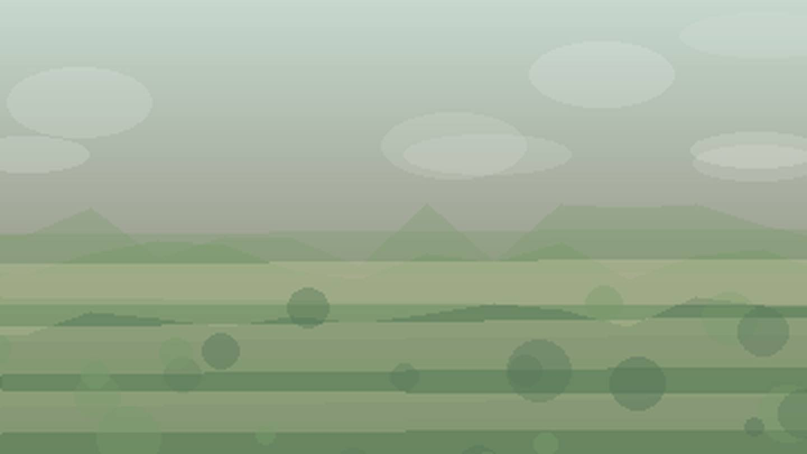

Главная / Чукотский автономный округ

Чукотский автономный округ
Что посадить
Что посадить
в Чукотском автономном округе
Выберите природную зону в Чукотском автономном округе: условия внутри региона различаются по теплу, влаге, ветру и длине сезона.
арктическое побережье: короткий сезон и прохладное лето требуют ранних сортов, укрытий и самых устойчивых культур. Ориентиры внутри зоны: Певек, Мыс Шмидта.
Открыть страницу зоны → континентальная зонаконтинентальная зона: короткий сезон и прохладное лето требуют ранних сортов, укрытий и самых устойчивых культур. Ориентиры внутри зоны: Билибино.
Открыть страницу зоны → юго-восточное побережьеюго-восточное побережье: короткий сезон и прохладное лето требуют ранних сортов, укрытий и самых устойчивых культур. Ориентиры внутри зоны: Анадырь, Провидения.
Открыть страницу зоны →